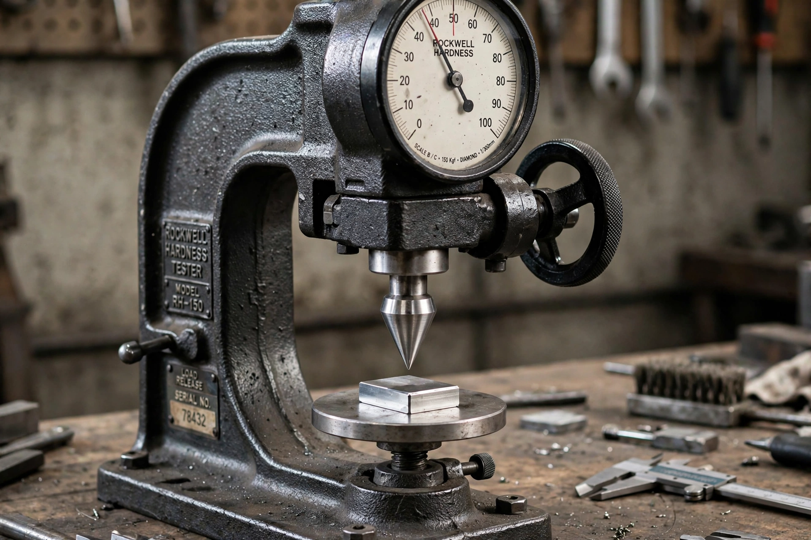

| Rockwell scale | |
 Rockwell hardness tester | |
| Measures | Indentation hardness |
|---|---|
| Inventors | Hugh M. Rockwell and Stanley P. Rockwell (patented 1919) |
| Common scales | HRC (hardened steels), HRB (softer metals) |
| Standard | ASTM E18; ISO 6508 |
The Rockwell scale is a hardness scale based on the indentation hardness of a material. In the Rockwell test, a large load ("major load") is applied on top of an initial small preload ("minor load"), and the hardness number is determined from the difference in penetration depth between the two. The test is quick, requires no optical measurement, and leaves only a small indentation, making it the most widely used hardness test in industry.
An indenter — either a diamond spheroconical cone or a hardened steel or tungsten-carbide ball — is first seated with a minor load (10 kgf). A major load is then applied, held, and removed while the minor load is maintained. The Rockwell number is calculated from the permanent increase in depth of penetration, converted so that harder materials give higher numbers. Different combinations of load and indenter define the various scales, denoted HR followed by a letter.
Unlike the Brinell and Vickers tests, which measure the size of the impression optically, the Rockwell reading is taken directly from a dial or digital display. Results depend on surface finish and specimen thickness, and values from different scales are not directly interconvertible, though approximate conversion tables exist. The test was patented in 1919 by Hugh M. and Stanley P. Rockwell, who worked for a Connecticut ball-bearing manufacturer seeking a fast way to check bearing races.